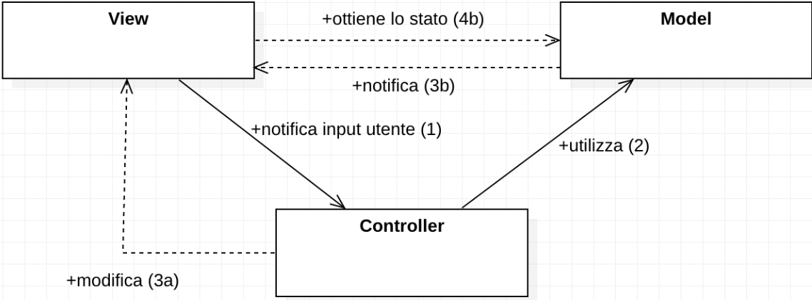
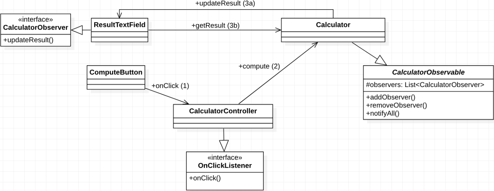

Il Model-View-Controller è un class design pattern architetturale.
Implementare un sistema software comporta lavorare su più livelli, tra cui il modello, la logica applicativa, la linea di comando, la GUI e molto altro.
Per il principio della singola responsabilità, ogni componente deve svolgere una ed una sola funzione.
Problema: ogni componente deve avere un compito preciso all’interno del sistema. La gestione delle relazioni tra i vari componenti è complessa. Bisogna minimizzare le interdipendenze e ciascun livello potrebbe essere sviluppato da diversi gruppi di lavoro.
class Calculator {
float result = 0;
String expression = "";
TextField text;
Button calculateButton;
private void parseExpression() {
// Code
}
private void compute() {
// Code
}
private float power() {
// Code
}
private float factorial() {
// Code
}
public void onClick(Button b) {
if(b == calculateButton) {
compute();
text.setText(String.valueOf(result));
}
}
}
Attraverso il pattern Model-View-Controller (o MVC) si vuole suddividere lo sviluppo in tre componenti:
Esistono diverse declinazioni di MVC, tutte con gli stessi obiettivi dell’originali e tutte con diverse intersezioni tra componenti. Alcune di esse sono:


class Calculator extends CalculatorObservable {
float result = 0;
String expression = "";
private void parseExpression() { /*Code*/ };
private void compute() {
// Code
notifyAll();
}
private float power() { /*Code*/ }
private float factorial() { /*Code*/ }
public float getResult() { return result; }
}
class CalculatorController implements OnClickListener {
ComputeButton button;
Calculator calculator = new Calculator();
public void setComputeButton(ComputeButton button) {
this.button = button;
this.button.addOnClickListener(this);
}
public void onClick() {
calculator.compute();
}
}
class ComputeButton extends Button {
// Receives user inputs
}
class ResultTextField extends TextField
implements CalculatorListener {
Calculator calc;
public ResultTextField(Calculator c) {
calc = c;
c.addObserver(this);
}
public void updateResult() {
setText(String.valueOf(calc.getResult()));
}
}